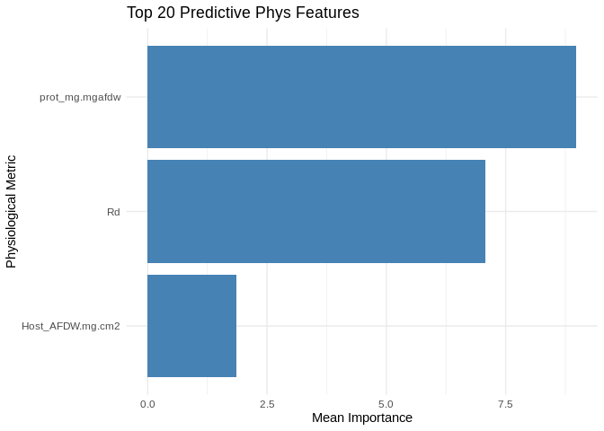
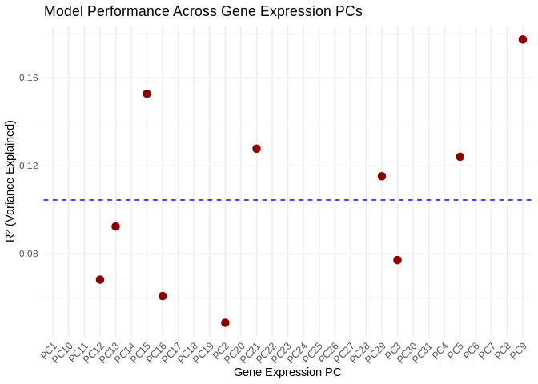
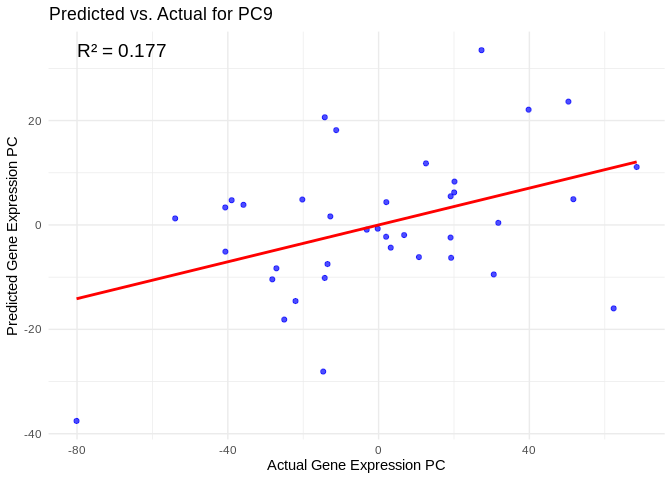

library(tidyverse)
library(ggplot2)
library(DESeq2)
library(igraph)
library(psych)
library(tidygraph)
library(ggraph)
library(WGCNA)
library(edgeR)
library(reshape2)
library(ggcorrplot)
library(corrplot)
library(rvest)
library(purrr)
library(pheatmap)
library(glmnet)
library(caret)
library(factoextra)
library(vegan)
library(ggfortify)I’d like to see whether phenotype can predict gene and/or miRNA expression, will be testing this using the ML approach Ariana has been trialing (see her mRNA-WGBS ML post here: https://ahuffmyer.github.io/ASH_Putnam_Lab_Notebook/E5-timeseries-molecular-mRNA-WGBS-machine-learning-analysis-Part-1/)
Results
I filtered, variance stabilized, and combined the raw gene counts and miRNA counts. Then, due to the high number, I reduced this combined expression data to PCs of similar expression. For phenotype, I used host biomass, host protein, and respiration, all of which are indicators of host energy storage and expenditure. I ran the ML model using phenotypes as the predictor and expression PCs as the response.
Protein was most predictive of expression, with respiration also highly predictive. Interestingly, biomass did not contribute much!

None of the gene PCs were well-predicted by phenotype, with the highest R2 value sitting at 0.177 (~18% of variance in the PCs explained by phenotype).
Also, most of the expression PCs (21/31) had NA R2 values, which I believe is related to low variance in the phenotype metrics, particularly the protein phenotype
> apply(merged_pcs, 2, var) PC1 PC2 PC3 PC4 PC5 PC6 PC7 PC8 PC9 PC10 PC11 PC12 PC13 PC14 PC15 PC16 PC17
5801.1357 2808.7631 2370.6702 1990.1140 1760.0861 1627.7522 1317.6404 1274.2452 1078.4045 1034.5725 976.4311 937.5277 891.5255 796.3490 779.2450 699.0609 676.0976
PC18 PC19 PC20 PC21 PC22 PC23 PC24 PC25 PC26 PC27 PC28 PC29 PC30 PC31
650.9711 620.9733 606.8573 591.2129 575.7182 550.6815 528.1735 519.2895 506.3591 474.2105 467.2894 454.2832 436.9429 423.9563 > apply(phys_selection, 2, var)Host_AFDW.mg.cm2 prot_mg.mgafdw Rd
0.33627626 0.01063323 0.03545622 We can look at model performance for specific expression PCs. For example, here’s PC9, which is the best-predicted PC (highest R2 value)
We can also look at the top miRNA/genes associated with it. This was interesting because there is an miRNA that pops out (Cluster_4034)!
## # A tibble: 20 × 3
## # Groups: Merged_PC [1]
## gene_miRNA Merged_PC Loading
## <chr> <chr> <dbl>
## 1 FUN_023262 PC9 -0.0227
## 2 FUN_016918 PC9 0.0198
## 3 FUN_007014 PC9 -0.0194
## 4 FUN_031632 PC9 0.0192
## 5 FUN_035523 PC9 0.0188
## 6 FUN_041996 PC9 0.0188
## 7 FUN_006731 PC9 -0.0186
## 8 FUN_022897 PC9 -0.0185
## 9 FUN_043835 PC9 0.0184
## 10 FUN_004465 PC9 0.0183
## 11 FUN_014188 PC9 -0.0183
## 12 FUN_034114 PC9 -0.0181
## 13 FUN_024741 PC9 -0.0181
## 14 FUN_006446 PC9 -0.0179
## 15 FUN_018629 PC9 -0.0178
## 16 FUN_013857 PC9 -0.0178
## 17 Cluster_4034 PC9 0.0176
## 18 FUN_039308 PC9 -0.0175
## 19 FUN_012117 PC9 0.0175
## 20 FUN_000459 PC9 -0.0174Code copied below in case of file path changes:
Inputs:
RNA counts matrix (raw):
../output/02.20-D-Apul-RNAseq-alignment-HiSat2/apul-gene_count_matrix.csvsRNA/miRNA counts matrix (raw):
../output/03.10-D-Apul-sRNAseq-expression-DESeq2/Apul_miRNA_ShortStack_counts_formatted.txtsample metadata:
../../M-multi-species/data/rna_metadata.csvphysiological data: https://github.com/urol-e5/timeseries/raw/refs/heads/master/time_series_analysis/Output/master_timeseries.csv
Note that I’ll start by using phenotype (e.g. biomass, respiration) as the predictor, which is suitable for understanding how external factors drive gene expression changes.
If, instead, we wanted to build some sort of predictive model, where gene expression could be used to predict phenotype, we could switch so that gene counts are used as the predictors.
Load libraries
Load and prep data
Load in count matrices for RNAseq.
# raw gene counts data (will filter and variance stabilize)
Apul_genes <- read_csv("../output/02.20-D-Apul-RNAseq-alignment-HiSat2/apul-gene_count_matrix.csv")
Apul_genes <- as.data.frame(Apul_genes)
# format gene IDs as rownames (instead of a column)
rownames(Apul_genes) <- Apul_genes$gene_id
Apul_genes <- Apul_genes%>%select(!gene_id)
# load and format metadata
metadata <- read_csv("../../M-multi-species/data/rna_metadata.csv")%>%select(AzentaSampleName, ColonyID, Timepoint) %>%
filter(grepl("ACR", ColonyID))
metadata$Sample <- paste(metadata$AzentaSampleName, metadata$ColonyID, metadata$Timepoint, sep = "_")
colonies <- unique(metadata$ColonyID)
# Load physiological data
phys<-read_csv("https://github.com/urol-e5/timeseries/raw/refs/heads/master/time_series_analysis/Output/master_timeseries.csv")%>%filter(colony_id_corr %in% colonies)%>%
select(colony_id_corr, species, timepoint, site, Host_AFDW.mg.cm2, Sym_AFDW.mg.cm2, Am, AQY, Rd, Ik, Ic, calc.umol.cm2.hr, cells.mgAFDW, prot_mg.mgafdw, Ratio_AFDW.mg.cm2, Total_Chl, Total_Chl_cell, cre.umol.mgafdw)
# format timepoint
phys$timepoint <- gsub("timepoint", "TP", phys$timepoint)
#add column with full sample info
phys <- merge(phys, metadata, by.x = c("colony_id_corr", "timepoint"), by.y = c("ColonyID", "Timepoint")) %>%
select(-AzentaSampleName)
#add site information into metadata
metadata$Site<-phys$site[match(metadata$ColonyID, phys$colony_id_corr)]
# Rename gene column names to include full sample info (as in miRNA table)
colnames(Apul_genes) <- metadata$Sample[match(colnames(Apul_genes), metadata$AzentaSampleName)]
# raw miRNA counts (will filter and variance stabilize)
Apul_miRNA <- read.table(file = "../output/03.10-D-Apul-sRNAseq-expression-DESeq2/Apul_miRNA_ShortStack_counts_formatted.txt", header = TRUE, sep = "\t", check.names = FALSE)Counts filtering
Ensure there are no genes or miRNAs with 0 counts across all samples.
nrow(Apul_genes)
Apul_genes_filt<-Apul_genes %>%
mutate(Total = rowSums(.[, 1:40]))%>%
filter(!Total==0)%>%
dplyr::select(!Total)
nrow(Apul_genes_filt)
# miRNAs
nrow(Apul_miRNA)
Apul_miRNA_filt<-Apul_miRNA %>%
mutate(Total = rowSums(.[, 1:40]))%>%
filter(!Total==0)%>%
dplyr::select(!Total)
nrow(Apul_miRNA_filt)Removing genes with only 0 counts reduced number from 44371 to 35869. Retained all 51 miRNAs.
Will not be performing pOverA filtering for now, since LM should presumabily incorporate sample representation
Physiology filtering
Run PCA on physiology data to see if there are phys outliers
Export data for PERMANOVA test.
test<-as.data.frame(phys)
test<-test[complete.cases(test), ]Build PERMANOVA model.
scaled_test <-prcomp(test%>%select(where(is.numeric)), scale=TRUE, center=TRUE)
fviz_eig(scaled_test)
# scale data
vegan <- scale(test%>%select(where(is.numeric)))
# PerMANOVA
permanova<-adonis2(vegan ~ timepoint*site, data = test, method='eu')
permanovapca1<-ggplot2::autoplot(scaled_test, data=test, frame.colour="timepoint", loadings=FALSE, colour="timepoint", shape="site", loadings.label.colour="black", loadings.colour="black", loadings.label=FALSE, frame=FALSE, loadings.label.size=5, loadings.label.vjust=-1, size=5) +
geom_text(aes(x = PC1, y = PC2, label = paste(colony_id_corr, timepoint)), vjust = -0.5)+
theme_classic()+
theme(legend.text = element_text(size=18),
legend.position="right",
plot.background = element_blank(),
legend.title = element_text(size=18, face="bold"),
axis.text = element_text(size=18),
axis.title = element_text(size=18, face="bold"));pca1Remove ACR-173, timepoint 3 sample from analysis. This is Azenta sample 1B2.
Apul_genes_filt <- Apul_genes_filt %>%
select(!`1B2_ACR-173_TP3`)
Apul_miRNA_filt <- Apul_miRNA_filt %>%
select(!`1B2_ACR-173_TP3`)
metadata <- metadata %>%
filter(Sample != "1B2_ACR-173_TP3")We also do not have phys data for colony 1B9 ACR-265 at TP4, so I’ll remove that here as well.
Apul_genes_filt <- Apul_genes_filt%>%
select(!`1B9_ACR-265_TP4`)
Apul_miRNA_filt <- Apul_miRNA_filt%>%
select(!`1B9_ACR-265_TP4`)
metadata <- metadata %>%
filter(Sample != "1B9_ACR-265_TP4")Assign metadata and arrange order of columns
Order metadata the same as the column order in the gene matrix.
list<-colnames(Apul_genes_filt)
list<-as.factor(list)
metadata$Sample<-as.factor(metadata$Sample)
# Re-order the levels
metadata$Sample <- factor(as.character(metadata$Sample), levels=list)
# Re-order the data.frame
metadata_ordered <- metadata[order(metadata$Sample),]
metadata_ordered$Sample
# Make sure the miRNA colnames are also in the same order as the gene colnames
Apul_miRNA_filt <- Apul_miRNA_filt[, colnames(Apul_genes_filt)]Metadata and gene count matrix are now ordered the same.
Conduct variance stabilized transformation
VST should be performed on our two input datasets (gene counts and miRNA counts) separately
Genes:
#Set DESeq2 design
dds_genes <- DESeqDataSetFromMatrix(countData = Apul_genes_filt,
colData = metadata_ordered,
design = ~Timepoint+ColonyID)Check size factors.
SF.dds_genes <- estimateSizeFactors(dds_genes) #estimate size factors to determine if we can use vst to transform our data. Size factors should be less than 4 for us to use vst
print(sizeFactors(SF.dds_genes)) #View size factors
all(sizeFactors(SF.dds_genes)) < 4All size factors are less than 4, so we can use VST transformation.
vsd_genes <- vst(dds_genes, blind=TRUE) #apply a variance stabilizing transformation to minimize effects of small counts and normalize with respect to library size
vsd_genes <- assay(vsd_genes)
head(vsd_genes, 3) #view transformed gene count data for the first three genes in the dataset. miRNA:
#Set DESeq2 design
dds_miRNA <- DESeqDataSetFromMatrix(countData = Apul_miRNA_filt,
colData = metadata_ordered,
design = ~Timepoint+ColonyID)Check size factors.
SF.dds_miRNA <- estimateSizeFactors(dds_miRNA) #estimate size factors to determine if we can use vst to transform our data. Size factors should be less than 4 for us to use vst
print(sizeFactors(SF.dds_miRNA)) #View size factors
all(sizeFactors(SF.dds_miRNA)) < 4All size factors are less than 4, so we can use VST transformation.
vsd_miRNA <- varianceStabilizingTransformation(dds_miRNA, blind=TRUE) #apply a variance stabilizing transformation to minimize effects of small counts and normalize with respect to library size. Using varianceStabilizingTransformation() instead of vst() because few input genes
vsd_miRNA <- assay(vsd_miRNA)
head(vsd_miRNA, 3) #view transformed gene count data for the first three genes in the dataset.Combine counts data
# Extract variance stabilized counts as dataframes
# want samples in rows, genes/miRNAs in columns
vsd_genes <- as.data.frame(t(vsd_genes))
vsd_miRNA <- as.data.frame(t(vsd_miRNA))
# Double check the row names (sample names) are in same order
rownames(vsd_genes) == rownames(vsd_miRNA)
# Combine vst gene counts and vst miRNA counts by rows (sample names)
vsd_merged <- cbind(vsd_genes, vsd_miRNA)Feature selection
Genes + miRNA
We have a large number of genes, so we’ll reduce dimensionality using PCA. Note that, since we only have a few phenotypes of interest, we don’t need to reduce this dataset
First need to remove any genes/miRNA that are invariant
vsd_merged_filt <- vsd_merged[, apply(vsd_merged, 2, var) > 0]
ncol(vsd_merged)
ncol(vsd_merged_filt)
colnames(vsd_merged[, apply(vsd_merged, 2, var) == 0])Removed 74 invariant genes. I was worried we lost miRNA, but it looks like everything removed was a gene (prefix “FUN”)!
Reduce dimensionality (genes+miRNA)
# Perform PCA on gene+miRNA expression matrix
pca_merged <- prcomp(vsd_merged_filt, scale. = TRUE)
# Select top PCs that explain most variance (e.g., top 50 PCs)
explained_var <- summary(pca_merged)$importance[2, ] # Cumulative variance explained
num_pcs <- min(which(cumsum(explained_var) > 0.95)) # Keep PCs that explain 95% variance
merged_pcs <- as.data.frame(pca_merged$x[, 1:num_pcs]) # Extract selected PCs
dim(merged_pcs)We have 27 gene/miRNA expression PCs
Genes only
To investigate gene expression separately from miRNA expression, reduce dimensionality of genes alone.
Remove any genes that are invariant
vsd_genes_filt <- vsd_genes[, apply(vsd_genes, 2, var) > 0]
ncol(vsd_genes)
ncol(vsd_genes_filt)Removed 74 invariant genes.
Reduce dimensionality
# Perform PCA on gene expression matrix
pca_genes <- prcomp(vsd_genes_filt, scale. = TRUE)
# Select top PCs that explain most variance (e.g., top 50 PCs)
explained_var_genes <- summary(pca_genes)$importance[2, ] # Cumulative variance explained
num_pcs_genes <- min(which(cumsum(explained_var_genes) > 0.95)) # Keep PCs that explain 95% variance
genes_pcs <- as.data.frame(pca_genes$x[, 1:num_pcs_genes]) # Extract selected PCs
dim(genes_pcs)Physiological metrics
Select physiological metrics of interest. For now we’ll focus on biomass (“Host_AFDW.mg.cm2”), protein (“prot_mg.mgafdw”), and respiration (“Rd”). These are all metrics of host energy storage and expenditure.
# Assign sample IDs to row names
rownames(phys) <- phys$Sample
# Select metrics
phys_selection <- phys %>% select(Host_AFDW.mg.cm2, prot_mg.mgafdw, Rd)
# Make sure the phys rownames are in the same order as the gene/miRNA rownames
phys_selection <- phys_selection[rownames(merged_pcs),]Phenotype to predict gene/miRNA expression
The model
Train elastic models to predict gene expression PCs from phys data.
train_models <- function(response_pcs, predictor_pcs) {
models <- list()
for (pc in colnames(response_pcs)) {
y <- response_pcs[[pc]] # Gene expression PC
X <- as.matrix(predictor_pcs) # Phys as predictors
# Train elastic net model (alpha = 0.5 for mix of LASSO & Ridge)
model <- cv.glmnet(X, y, alpha = 0.5)
models[[pc]] <- model
}
return(models)
}
# Train models predicting gene expression PCs from phys data
models <- train_models(merged_pcs, phys_selection)Extract feature importance.
get_feature_importance <- function(models) {
importance_list <- lapply(models, function(model) {
coefs <- as.matrix(coef(model, s = "lambda.min"))[-1, , drop = FALSE] # Convert to regular matrix & remove intercept
# Convert to data frame
coefs_df <- data.frame(Feature = rownames(coefs), Importance = as.numeric(coefs))
return(coefs_df)
})
# Combine feature importance across all predicted gene PCs
importance_df <- bind_rows(importance_list) %>%
group_by(Feature) %>%
summarize(MeanImportance = mean(abs(Importance)), .groups = "drop") %>%
arrange(desc(MeanImportance))
return(importance_df)
}
feature_importance <- get_feature_importance(models)
head(feature_importance, 20) # Top predictive phys featuresEvaluate performance.
evaluate_model_performance <- function(models, response_pcs, predictor_pcs) {
results <- data.frame(PC = colnames(response_pcs), R2 = NA)
for (pc in colnames(response_pcs)) {
y <- response_pcs[[pc]]
X <- as.matrix(predictor_pcs)
model <- models[[pc]]
preds <- predict(model, X, s = "lambda.min")
R2 <- cor(y, preds)^2 # R-squared metric
results[results$PC == pc, "R2"] <- R2
}
return(results)
}
performance_results <- evaluate_model_performance(models, merged_pcs, phys_selection)
summary(performance_results$R2)Results
Plot results.
# Select top 20 predictive phys features
top_features <- feature_importance %>% top_n(20, MeanImportance)
# Plot
ggplot(top_features, aes(x = reorder(Feature, MeanImportance), y = MeanImportance)) +
geom_bar(stat = "identity", fill = "steelblue") +
coord_flip() + # Flip for readability
theme_minimal() +
labs(title = "Top 20 Predictive Phys Features",
x = "Physiological Metric",
y = "Mean Importance")ggplot(performance_results, aes(x = PC, y = R2)) +
geom_point(color = "darkred", size = 3) +
geom_hline(yintercept = mean(performance_results$R2, na.rm = TRUE), linetype = "dashed", color = "blue") +
theme_minimal() +
labs(title = "Model Performance Across Gene Expression PCs",
x = "Gene Expression PC",
y = "R² (Variance Explained)") +
theme(axis.text.x = element_text(angle = 45, hjust = 1)) # Rotate labelsKeep in mind that, while we ran the model with physiological predictors, we’re really interested in the genes/miRNA associated with these predictors
View components associated with gene/miRNA PCs
# Get the PCA rotation (loadings) matrix from the original gene/miRNA PCA
merged_loadings <- pca_merged$rotation # Each column corresponds to a PC
# Convert to data frame and reshape for plotting
merged_loadings_df <- as.data.frame(merged_loadings) %>%
rownames_to_column(var = "gene_miRNA") %>%
pivot_longer(-gene_miRNA, names_to = "Merged_PC", values_to = "Loading")
# View top CpGs contributing most to each PC
top_genes <- merged_loadings_df %>%
group_by(Merged_PC) %>%
arrange(desc(abs(Loading))) %>%
slice_head(n = 20) # Select top 10 CpGs per PC
print(top_genes)View top 20 miRNA/genes associated with PC9 (the PC with the highest R^2)
print(top_genes%>%filter(Merged_PC=="PC9"))Interesting, there’s an miRNA in there!
View predicted vs actual gene expression values to evaluate model.
# Choose a gene expression PC to visualize (e.g., the most predictable one)
best_pc <- performance_results$PC[which.max(performance_results$R2)]
# Extract actual and predicted values for that PC
actual_values <- merged_pcs[[best_pc]]
predicted_values <- predict(models[[best_pc]], as.matrix(phys_selection), s = "lambda.min")
# Create data frame
prediction_df <- data.frame(
Actual = actual_values,
Predicted = predicted_values
)
# Scatter plot with regression line
ggplot(prediction_df, aes(x = Actual, y = lambda.min)) +
geom_point(color = "blue", alpha = 0.7) +
geom_smooth(method = "lm", color = "red", se = FALSE) +
theme_minimal() +
labs(title = paste("Predicted vs. Actual for", best_pc),
x = "Actual Gene Expression PC",
y = "Predicted Gene Expression PC") +
annotate("text", x = min(actual_values), y = max(predicted_values),
label = paste("R² =", round(max(performance_results$R2, na.rm=TRUE), 3)),
hjust = 0, color = "black", size = 5)
## `geom_smooth()` using formula = 'y ~ x'